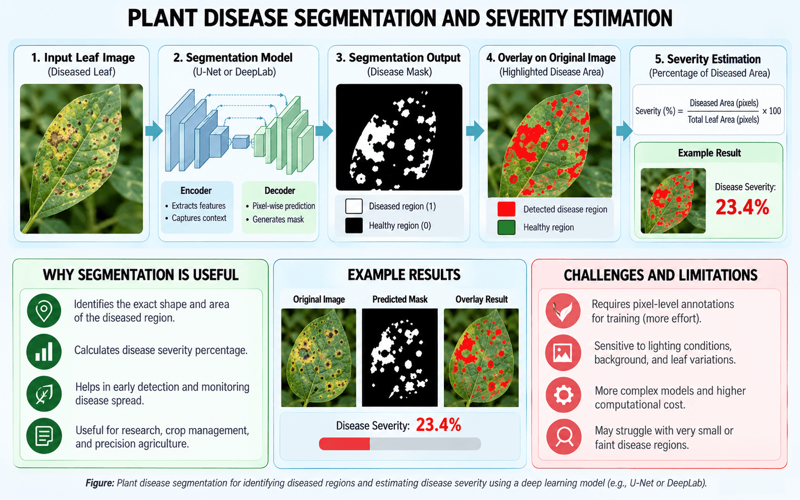

Pixel-Level Semantic Segmentation
Bounding boxes give rectangular regions, but plant disease spots have irregular, curved shapes. Semantic segmentation classifies every pixel in the image individually: is this pixel healthy leaf tissue, a diseased lesion, or background [3], [4]?
Common Segmentation Models
- U-Net: Uses an encoder-decoder architecture with skip connections that pass fine detail from the downsampling path to the upsampling path, helping preserve precise lesion boundaries.
- DeepLabV3+: Uses Atrous Spatial Pyramid Pooling (ASPP) to capture patterns at multiple scales without losing resolution, making it effective for complex leaf and spot outlines [4], [5].
Disease Severity Estimation
In farming, knowing that a leaf has a disease is only part of the story. A leaf with 2% damage might only need monitoring, whereas 40% damage might require immediate treatment. With segmentation, we can calculate the exact severity percentage:
Severity Formula
$$\text{Disease Severity (\%)} = \left(\frac{\text{Diseased Leaf Pixels}}{\text{Total Leaf Pixels}}\right) \times 100$$

Algorithm 1: Disease Severity Calculation
Once the segmentation model outputs the pixel counts for the diseased area and the total leaf, the severity percentage is calculated:
# Disease Severity Estimation Algorithm
# Inputs: Segmented pixel counts from DeepLabV3+ or U-Net
def calculate_disease_severity(diseased_pixels: int, total_leaf_pixels: int) -> float:
"""Calculates the percentage of leaf area affected by disease."""
if total_leaf_pixels <= 0:
raise ValueError("Total leaf area must be greater than zero.")
severity_percentage = (diseased_pixels / total_leaf_pixels) * 100.0
return severity_percentage
# Example with segmented pixel counts:
diseased_pixels = 2340
total_leaf_pixels = 10000
severity = calculate_disease_severity(diseased_pixels, total_leaf_pixels)
print(f"Disease Severity: {severity:.2f}%")Inputs & Outputs
Inputs: 2,340 diseased pixels, 10,000 total leaf pixels.
Output: Disease Severity: 23.40%
Practical Use
Allows automated sprayers or farmers to apply treatments based on measured damage rather than spraying whole fields equally.
Algorithm Steps
- Segment the complete leaf from the background.
- Segment the diseased spots (chlorosis or necrosis).
- Count total leaf pixels and diseased pixels.
- Divide diseased pixels by total leaf pixels and multiply by 100.
Module Narration
A 1–2 minute audio walkthrough of U-Net/DeepLabV3+ segmentation and disease severity index calculation.